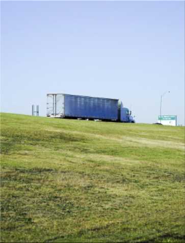
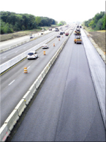

The Ferrovial Agroman
Technical Office
Develop intelligent infrastructure to the customers’ full satisfaction, with respect for the environment

Organisation Departments
The Technical Office includes the main specialities within civil engineering and residential and non-residential building design structures on departments

Roads & Railways
The Roads and Railways Department is one of our most established and experienced areas.
Our values
Environment
Our aim is to ensure the projects involving the Technical Office comply with legal requirements and technical specifications in matters concerning the environment.
Case Studies
IH 635 (LBJ)
Dallas, Texas
USA
2011-2016
SH130
Austin, Texas
USA
2009-2012
H407
Toronto
Canada
1999-2002
SCUT
Azores
Portugal
2009-2012
Indiana Toll Road
Illinois, Indiana
USA
2006-2011
M3
Clonee-North of Kells
Ireland
2007-2010
N4/N6
Kinnegad-Kilcock
Ireland
2003-2005
Costa del Sol
Málaga-Guadiaro
Spain
1997-2002
Radial 4
Madrid
Spain
2002-2004
HSR Guadarrama Tunnel
Madrid–Segovia
Spain
2002-2008
HSR Pajares Tunnels
León–Asturias
Spain
2004-2009